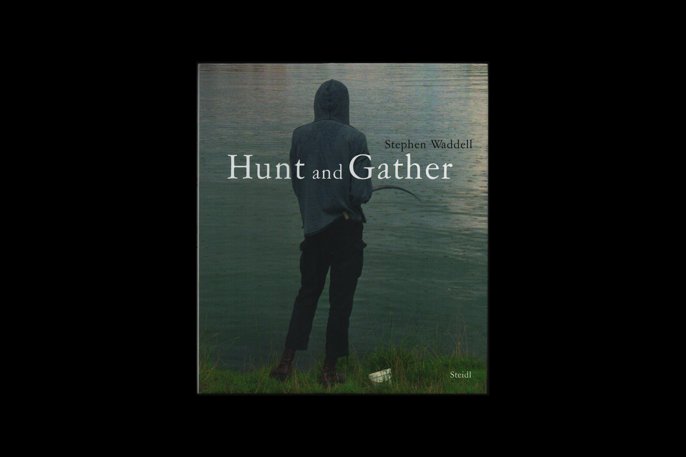
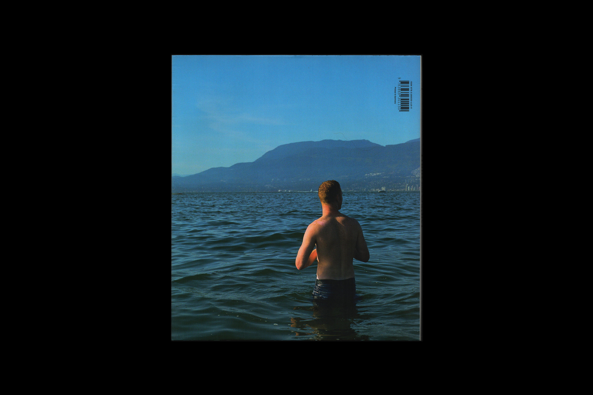

2011
Hardcover
128 pages, 120 images
9.5 x 1 x 11.8 inches
Publisher: Steidl
Authors: Brain Sholis (Author) Helga Pakasaar (Introduction)
Images: LL'Editions
Out of print
“Stephen Waddell embraces the entanglements and conundrums inherent to photographic mediations. For decades he has reinvigorated street photography
and reportage through keen observation and an empathetic eye for social subjects. Initially a painter and filmmaker, Waddell brings questions about
the very notion of realism to picture-making. He often references pictorial histories, such as early photography or classical painting, acknowledging
that observation is informed by recognition and an unconscious awareness of existing images.
Working with both analogue and digital tools, Waddell’s highly considered approach involves experimenting continuously with new processes and materials.
The subtlety of his photography is amplified by a painterly sensibility that emphasizes qualities of light. Illumination becomes a reference to photographic
perception as well as to human vision. Consistent across his work are close affinities between a print’s subject matter and its material qualities.
At times, Waddell’s layered images allude to the act of photography itself—as evident in his large gelatin silver prints depicting underground
caverns lit from within. Waddell takes on the challenges of having single images carry dense meaning. Looking at one of his mise-en-scènes is a
richly rewarding sensory experience, as close scrutiny animates uncanny details. While his images are to some extent staged, chance elements infiltrate each picture.
He finesses the dynamic between controlled and wild elements in images at once precise and ambiguous.”
- Helga Pakasaar, Audain Chief Curator, The Polygon Gallery

